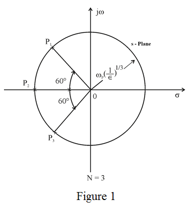

Refer to the Figure 16.10 (c) in the text book.
The given maximum allowed variation pass band transmission  is, .
is, .
Determine the parameter which determines the maximum variation in pass band transmission.
Substitute 3 for .
.
Refer to the Figure 16.10 (c) in the text book.
The given maximum allowed variation pass band transmission is, .
Determine the parameter which determines the maximum variation in pass band transmission.
Substitute 3 for.
The graphical construction for determining the poles of a Butterworth filter of order N is

The natural modes lie on the circle of radius where  and are spaced by equal angles of with the first mode at an angle from the axis. The natural modes all have equal radial distance from the origin item all have the same frequency.
and are spaced by equal angles of with the first mode at an angle from the axis. The natural modes all have equal radial distance from the origin item all have the same frequency.
Write the expression of transfer function of butterworth filter of order .
.
The poles of transfer function are, .
The low pass to band pass transformation is accomplished if the following mappings occur.
Where,
and are the band edges of the bandpass filter and
is the band edge of the lowpass filter.
 to accomplish the low pass to band pass transformation.
to accomplish the low pass to band pass transformation. The passband edge is equal to .
The poles of the filter are,
Write the poles of band pass filter.
Determine the pole frequency  and the band width and the pole quality factor for three resonant circuits.
and the band width and the pole quality factor for three resonant circuits.
The pole of the band pass filter is,
The pole frequency is,
The bandwidth of the filter  is,
is,
The pole quality factor  is,
is,
The pole of the band pass filter is,
The pole frequency is,
Therefore, the pole frequency, band width and quality factor are.
The angular freqeuncy is,
The bandwidth of the filter is,
The pole quality factor is,
Therefore, the pole frequency, band width and quality factor are.